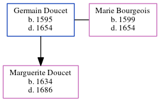

Germain Doucet 1595 - 1654
[ Home ] | [ Calendar ] | [ Surnames Index ] | [ Census Index ] | [ Family History ]Germain Doucet, the 11 times great-grandfather of Michele Copp (née Phillips), was born in Brie, Ille-et-Vilaine, Bretagne, France in 15951 and married Marie Bourgeois (with whom he had 1 child, Marguerite Louise) in Brie in 1620.
He died in 1654 in Port Royal, Acadia, Nova Scotia, Canada.
Children
- Marguerite Louise was born in 1634
Citations
- U.S. and International Marriage Records, 1560-1900 Online publication - Provo, UT, USA: The Generations Network, Inc., 2004.Original data - This unique collection of records was extracted from a variety of sources including family group sheets and electronic databases. Originally, the information was deriv
Family Tree
Generated by ged2site. Last updated on Jun 6, 2024